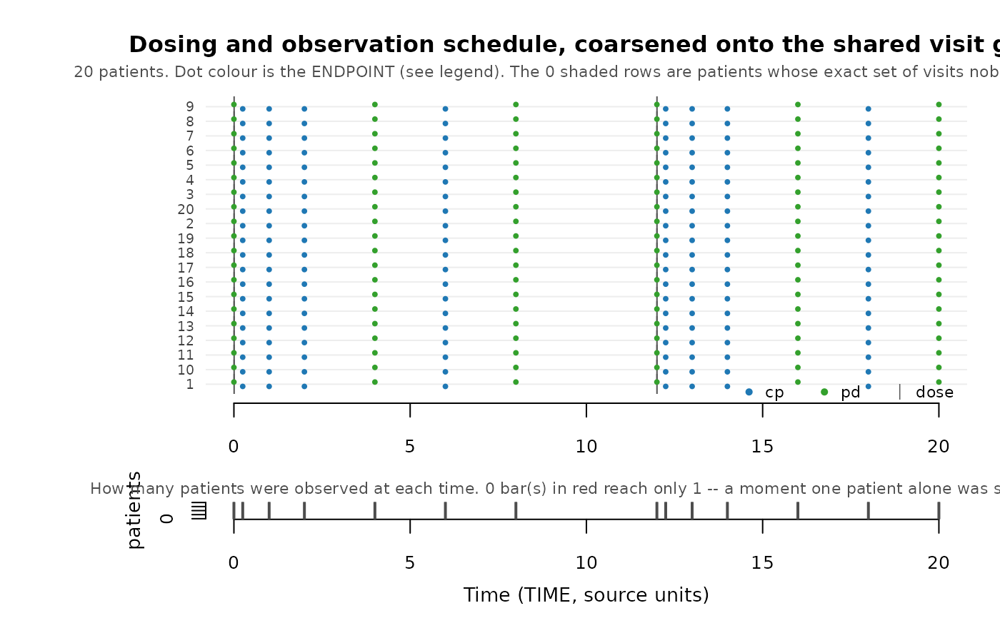

The picture behind skeleton_uniqueness(). One row per patient, one mark
per event: when they were dosed, and when each endpoint was observed. Read
it to decide whether a uniqueness count is a real problem or ordinary
an ordinary gap in follow-up.
Arguments
- data
A PMX dataset – normally the source.
- roles
Explicit roles from
pmx_roles().- coarsen_time
Draw the coarsened visit grid (
TRUE, the default) or the recorded times as given (FALSE).- max_patients
Draw at most this many patients, evenly spread through the ordering so the shape of the cohort survives. Default 80.
- main
Plot title. Defaults to a description of what is drawn.
Value
The skeleton_uniqueness() table for the drawn data, invisibly.
Details
Two panels:
the map – patients ordered by how long they were followed, so a ragged right-hand edge reads as a staircase. That edge is follow-up ending, whether because a patient discontinued or because the study has not reached their later visits yet. A patient whose observation schedule no other patient shares is marked in the margin, and their label is drawn in red.
the visit histogram – how many patients were observed at each time on the grid. A protocol grid gives tall bars at a handful of times. A bar of height one is a moment only one patient was sampled at, which is precisely what
synpmx_avatar()would copy verbatim onto an avatar, and those bars are drawn in red.
By default the times are coarsened first, so the picture shows the grid
synpmx_avatar() actually generates on. Pass coarsen_time = FALSE to see
the recorded times instead; drawing it both ways is the quickest way to see
what coarsening bought.
Source-derived, like every diagnostic here: keep the figure inside the safe environment.
Examples
data <- pmx_simulated_fixture(20)
roles <- pmx_roles(
id = "ID", time = "TIME", dv = "DV", amt = "AMT", evid = "EVID",
cmt = "CMT", dvid = "DVID", covariates = "WT"
)
plot_pmx_schedule(data, roles)
